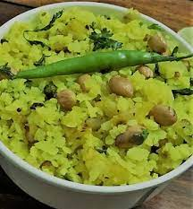

Avalakki

Description
A quick south Indian dish, also called Poha in north India.
Made with beaten rice and usually had for breakfast.
Ingrediants
- 2 cups thick avalakki / poha / beaten rice
- fistful of groundnuts / peanuts
- ½ onion, finely chopped
- 1 green chilli, finely chopped
- 1 inch ginger, finely chopped
- ¼ teaspoon turmeric powder
- ½ tsp sugar or as required
- salt to taste
- 1 tbsp lemon juice
- few coriander leaves, chopped
For tempering:
- 1 tbsp oil
- ½ teaspoon mustard seeds
- ½ tsp jeera / cumin seeds
- ½ tsp urad dal
- pinch of hing / asafetida
- 4-5 curry leaves
Preperation Steps
- Soak 2 cups of avalakki / poha in water for about 5 minutes or till they turn soft yet retain their shape. drain them and make sure the pohas are easily smashed when you press it.
- Heat oil and add mustard seeds, urad dal, jeera and hing. allow them to crackle. Also add curry leaves at this stage.
- Add peanuts in the pan and fry till they become crunchy.
- Now add chopped onions, chilli and ginger. Stir fry till the onions sweat.
- Add turmeric powder, salt, sugar and saute for a few seconds.
- Now add soaked-drained avalakki (poha) and stir on a low flame. Cover and cook for 1-2 minutes on very low flame.
- Sprinkle some lemon juice and chopped coriander leaves.
- Serve khara poha / khara avalakki hot with curd and mixture along with masala tea.